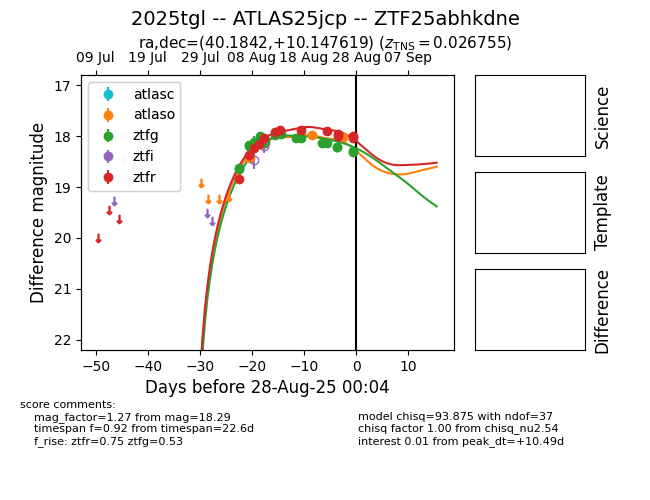

Target 2025tgl at 2025-08-26 23:32, see:
FINK: fink-portal.org/ZTF25abhkdne
Lasair: lasair-ztf.lsst.ac.uk/objects/ZTF25abhkdne
ALeRCE: alerce.online/object/ZTF25abhkdne
TNS: wis-tns.org/object/2025tgl
YSE: ziggy.ucolick.org/yse/transient_detail/2025tgl
alt names
ZTF25abhkdne (ztf,fink)
2025tgl (tns,yse)
ATLAS25jcp (atlas)
coordinates:
equatorial (ra, dec) = (40.1842,+10.14762)
galactic (l, b) = (162.0538,-44.26490)
photometry
last atlaso=18.02, ztfg=18.22, ztfr=17.96
6 atlaso, 18 ztfg, 11 ztfr detections
